완성보다 시도, 각자의 자리에서 만든 세 편의 실험
개인의 도구, 팀의 시스템, 브랜드의 콘텐츠 — 세 팀이 각자의 자리에서 AI와 부딪힌 세 번째 회차
세 번째 AI Best Practice Session 현장 노트
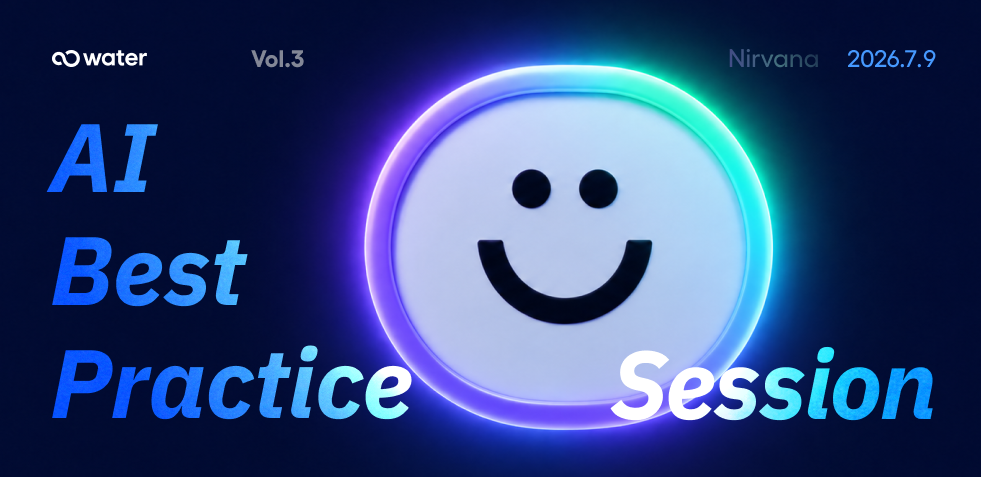
“요새 클로드와 얘기하는 시간이
동료들과 얘기하는 시간보다 더 많은 것 같아요.” — 워터 대표, 세 번째 AI Best Practice Session 오프닝
00세 번째로 마주 앉은 아침
이번 세션은 대표님의 자기 반성으로 시작됐습니다. “요새 클로드와 얘기하는 시간이 여러분과 얘기하는 시간보다 더 많은 것 같아 반성 중이에요.” 그런데 이어진 말이 재미있었어요. “그런데 새로 나온 클로드 fable 모델은 맥락과 심지를 잃지 않고 끝까지 함께 달려주는 게, 거의 시니어한테 일을 시키는 것 같아서요.”
반성하시는 이유와 계속 쓰시는 이유가 동시에 있는 그 마음, 이번 회차 세 명의 발표자에게서도 비슷하게 보였습니다.
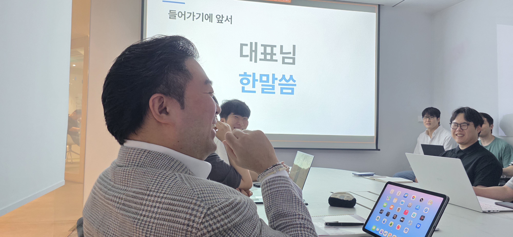
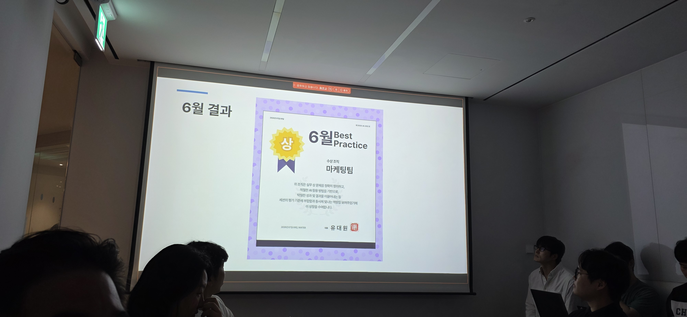
6월의 베스트 프랙티스 팀도 발표됐어요. 박빙 끝에 마케팅팀이 6월의 월간 베스트로 뽑혔고, CXD팀도 근소한 차이로 함께 박수를 받았습니다. 리워드는 7월까지 정리해서 대표님이 한 번에 시상하실 예정이라고 해요.
그리고 세 명의 발표자가 소개됐습니다. 인사팀 임승준 팀장님, BXD팀 황현정 팀장님 + 박세연 매니저님, 그리고 오명진 매니저님. 세 발표를 관통하는 키워드가 하나 있다면, 그건 “각자의 자리에서 AI를 어떻게 쓸까”였습니다. 개인의 도구로, 팀의 시스템으로, 그리고 브랜드의 콘텐츠로.
01혼자서도 잘하려면 — 인사팀 임승준 팀장님
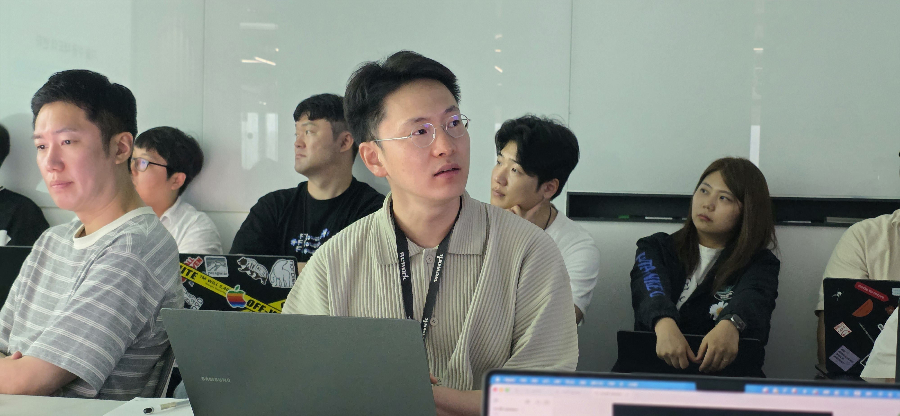
임 팀장님의 첫 슬라이드는 발표 형식 6가지였습니다. 대표님이 정의한 5P에 자기만의 프라이빗 오피니언 한 개를 더한 구성. “조직이 어떻게 일해야 할까가 아니라, 이번엔 개인이 어떻게 해야 할까에 포커싱을 뒀습니다.”
이유는 단순했어요. 인사팀은 사실상 1인 샵. 혼자서도 잘하려면, 하나의 개인이자 도구이자 동료일 수 있는 AI를 적극적으로 쓰는 방법밖에 없다는 것이었습니다.
“혼자서도 잘하려면, 하나의 개인이자 도구이자 동료일 수 있는 AI를 적극적으로 쓰는 방법밖에 없다고 생각했습니다.”
10+ 개의 MVP — 경영관리부터 노무·총무까지
그가 지난 3개월 동안 건드린 영역은 놀랄 만큼 넓었습니다. 경영관리(HR 데이터·네트워킹 관리), HRM(조직 발령·성과 평가), 교육(콘텐츠 아카이빙·리더십 진단), 채용(ATS 프로토타입), 노무(취업규칙 AI 에이전트), 총무(법인차량·경조사).
이 중 시연으로 보여준 첫 프로젝트는 HR 대시보드였습니다. 대표님·경영자가 인력 구성, 이탈, 프로파일, 역량 트렌드를 한눈에 볼 수 있는 화면.
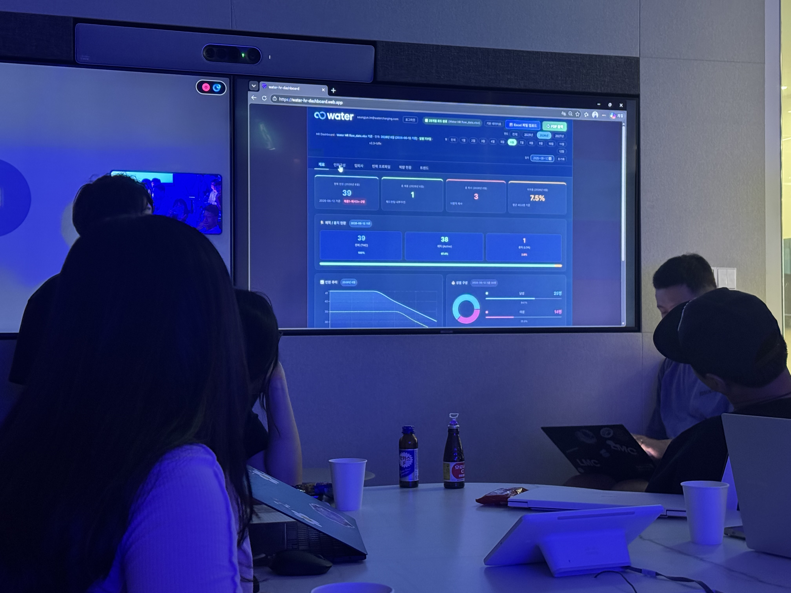
임 팀장님은 이 대시보드의 백단을 잠깐 보여줬어요. “핵심은 구현이라고 보시는 게 좋을 것 같습니다.” 데이터 하이어라키를 먼저 정의하고, 인디케이터와 데피니션을 잡아둔 다음 그 위에서 숫자를 뽑는 방식. 본인이 입사한 4월 6일부터 매일 새벽 갱신한 약 460일치 로우 데이터가 뒤에 깔려 있었습니다.
바이브 코딩보다는 스펙 드리븐
그의 접근법은 명확했어요. “그냥 자연어로 주고받으면서 결과가 나올 수도 있지만, 어느 정도 스펙을 짜놓고 만들면 빠르게 나오는 경향이 있어서요.”
네트워크 관리, 조직 발령, 성과 평가, ATS, 노무 에이전트 — 각 프로젝트마다 그는 먼저 엑셀·텍스트로 설계 원칙 · 주의사항 · 필드 정의부터 짰어요. 그 다음에 클로드에게 던져서 MVP를 뽑는 순서.
노무 에이전트가 인상적이었습니다. 취업규칙 개정이 2021년 이후로 거의 멈춰 있어서 리스크 관리가 필요했는데, 필요한 법령을 리스트로 잡아두고 엔트로피 API 연동으로 개정이 필요한 항목을 자동으로 짚어주는 구조였어요. “하드 코딩 형태로 한 번 넣어봤더니 개정 필요한 게 딱딱 찍혀서요.”
솔직한 한계 — “숫자에서 빠그라지는 게 많다”
지난 회차의 마케팅팀 김다현 팀장님을 오마주하듯, 그도 실패기를 먼저 꺼냈어요. “개선 포인트를 특정하기가 어려웠습니다.”
가장 힘들었던 건 숫자가 안 맞는 순간이었다고 해요. 6월 12일에 근속을 마친 이영규 그룹장의 경우, 12일까지는 플러스 1, 13일에 마이너스 1이 되어야 하는데 12일부터 갑자기 마이너스 1이 되는 버그가 있었대요. 도저히 원인을 못 찾다가 결국 타임존 설정이 아시아가 아니었기 때문이었다는 걸 발견했습니다. “다른 지표도 그럴 수 있다는 생각 때문에 되게 힘들었어요.”
또 하나는 본질적 질문. “만들었는데, 어떻게 쓸 건데? 대표님이 쓰시는 데 불편함은 없는지, 유지보수·확장·보안은 어떻게 할지. 이 모든 프로젝트가 다 보안에 결부된 거라서요.” 로컬 호스트·로컬 스토리지에 머물러 있는 이유이기도 했어요.
“만들고 나서 끝이 아니라, 어떻게 쓸 건데? 대표님이 쓰시는 데 불편함은 없는지, 유지보수·확장·보안은 어떻게 할지. 근본적인 설계를 고민하고 한 걸까 싶어서 오히려 지금은 좀 겁나긴 합니다.”
동료들과 나누고 싶었던 이야기 — 도메인 지식과 대화
그가 이번 발표에서 가장 나누고 싶었던 건 두 가지였어요.
첫째, 도메인 지식 × AI = 파괴력. “AI는 직무를 중심으로 하고 사업에 대한 도메인이 붙기만 하면 파괴력이 엄청나집니다. 저는 지금 CPO에 대한 공부를 계속하고 있는데, 사업 이해도가 더해지면 더 기가 막힌 결과물이 나오지 않을까 싶어요.”
둘째, 1인은 편하지만 팀은 어렵다는 것. “저는 혼자니까 편해요. 마음대로 규정하고 정의하고 대표님만 설득하면 되니까요. 근데 다른 팀들은 사전 정의와 동의의 골자가 명확하지 않으면, 6명이 같은 프로젝트를 하면 6개의 다른 프로젝트가 나올 것 같아요. 팀 단위로는 방향성·전략·목표를 완벽하게 합치할 정도로 대화를 많이 해야 됩니다.”
02AI가 브랜드답게 만들게 하는 법 — BXD팀 황현정 팀장님 + 박세연 매니저님
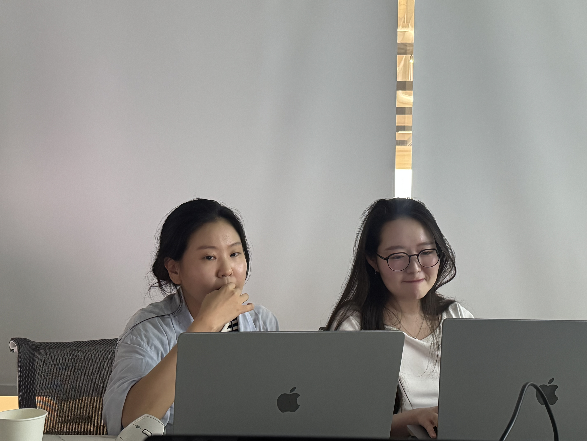
BXD팀의 첫 슬라이드에 이렇게 적혀 있었어요. “빠르게 만들어지는 거랑, 우리 브랜드 워터답게 만들어지는 건 전혀 다른 문제입니다.”
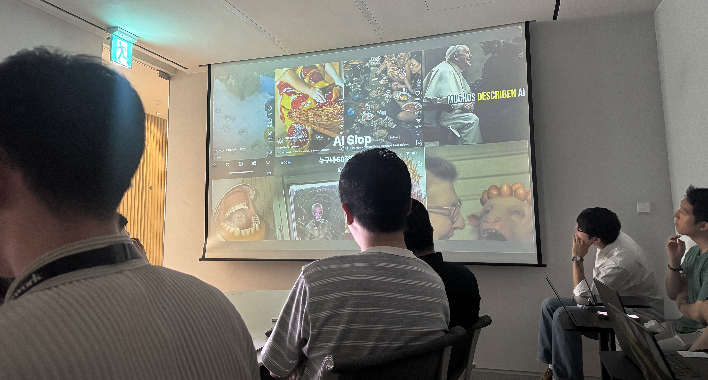
황현정 팀장님의 진단은 명확했어요. AI에게 부족한 건 제작 능력이 아니라, 무엇을 지키고 무엇을 버릴지에 대한 판단 기준. 그래서 이번엔 “예쁜 결과물을 빨리 만드는 사례”가 아니라, 브랜드 기준에 맞게 AI가 반복해서 따를 수 있는 시스템을 만드는 이야기를 준비했다고 했습니다.
규칙 문서화 — “예쁘게, 심플하게”를 버리기
여기서부터 박세연 매니저님이 이어받았어요. AI를 쓰기 전에 가장 먼저 한 일은 생성이 아니라 정의였습니다. 기존 이브이크루 캐릭터 스타일을 분석해서 무엇이 워터다움인지 구체적인 규칙으로 옮기는 작업.
사람 캐릭터의 비율, 손과 발의 단순화 방식, 차량과 충전기의 상대적 크기, 라인 두께. 감각적으로 판단하던 요소를 문서화하는 과정에서 중요한 건 “예쁘게”, “심플하게” 같은 추상적 표현을 줄이고 AI도 이해할 수 있는 조건으로 바꾸는 것이었어요. 예를 들어 “일관된 라인”이 아니라 “모든 외곽선과 내부선을 동일한 5포인트로”.
Midjourney vs ChatGPT — 목적이 도구를 결정한다
초기엔 Midjourney로 시작했어요. PLUS X 사례처럼 --sref(스타일 레퍼런스) 기능이 매력적이었거든요. 그런데 세 번의 시도 끝에 한계가 분명해졌습니다.
- 1차 — 카툰북 같은 풍부한 디테일. WATER 스타일과 거리 멂
- 2차 —
--sw 1000적용 → 어린이 만화 분위기 (Mr. Bean 풍) - 3차 — Tom Froese 스타일 명시 → 80% 근접, 그러나 손그림 느낌
가장 큰 벽은 “Midjourney가 우리 가이드라인 PDF를 읽을 수 없다”는 것. 컬러 코드 #0099FF나 8등신 비율 같은 정밀 룰을 아무리 텍스트로 설명해도, Midjourney는 자기만의 회화적 해석을 얹어버렸어요.
ChatGPT로 전환한 뒤 세 가지가 달라졌습니다. (1) 가이드라인 PDF를 직접 분석. (2) 한국어로 정밀 수정. (3) 같은 채팅에서 한 장을 점점 정확하게 다듬을 수 있음. Midjourney가 매번 새 4장을 뽑아버리는 것과는 반대 방식이었어요.
“툴이 뭐가 더 좋다기보다는, 우리 목적이 뭔지가 더 중요했던 것 같아요. 무드 탐색이면 Midjourney, 정밀한 브랜드 자산이면 ChatGPT.”
v1 → v2 → v3 — 그리고 다시 v3로 돌아온 이야기
공통 프롬프트는 아주 단순하게 시작했어요. 변수는 세 개 — 무엇을 그릴지(오브젝트), 어떤 각도에서 볼지(뷰), 어떤 색을 적용할지(컬러). 원칙은 하나 — AI는 단일 에셋(차량 1대, 인물 1명, 오브제 1개)만 생성. 변수가 적어야 가이드 부합 여부를 객관적으로 평가할 수 있으니까요.
여기서 재미있는 실패담이 나왔어요. v1은 디테일 수준이 균일하지 않았고, v2에서 KEEP / SIMPLIFY / REMOVE 위계를 추가해 반드시 살릴 요소·단순화할 요소·제거할 요소를 나눴는데 결과가 많이 좋아졌지만 여전히 라인이 흔들렸어요. 그래서 더 단순한 v3.5를 만들었는데 — 이번엔 페라리 교체의 정체성까지 사라져버렸습니다. “불필요한 디테일을 제거하라”는 지시가 너무 과하게 적용된 결과였어요.
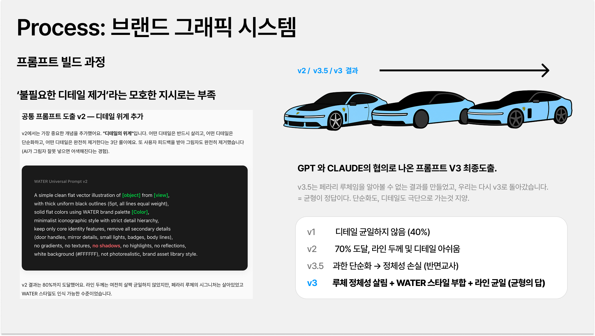
그렇게 정리된 공통 프롬프트를 카테고리(차량·사람·오브제) × 셰입 × 스타일 × 렌더링이 조합되는 모듈 구조로 바꿨어요. 예를 들어 사람은 정면에서 코와 귀를 표현하지 않고, 차량은 불필요한 배지와 복잡한 휠을 제거하는 식으로 카테고리별 금지 규칙을 심어뒀습니다.
디자인 에셋 라이브러리 — Supabase + Gemini API 자동 태깅
그런데 만든 것보다 다시 쓰이게 하는 게 더 어려운 문제였어요. 셰어포인트는 네이밍이 어렵고 썸네일이 안 뜨고 검색이 잘 안 되는 문제가 있었으니까요.
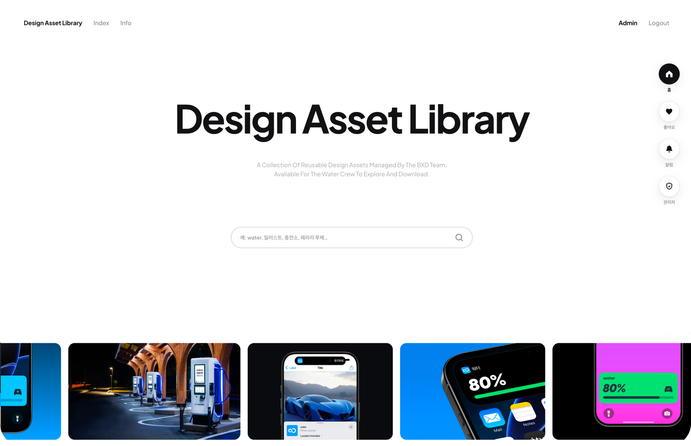
이 라이브러리는 Supabase를 DB로, 클로드 디자인으로 UI를 만든 구조. Gemini API로 이미지 자동 태깅을 하되 100% 정확하지 않아 수동 보정을 병행하고 있다고 했어요.
대표님이 시연 중에 “내린천휴게소 검색해봐요”라고 하셨는데, 마침 그 카테고리 사진이 아직 안 들어가서 결과가 안 떴어요. “저희가 아직 휴게소 사진을 다 못 넣어서요…” 이런 순간이 세션의 진짜 재미이기도 했습니다.
Claude Design + design.md — “대실패 해서 다시 만들었어요”
두 번째 실험은 디자인 시스템을 AI가 읽을 수 있게 하는 것. 개발자들의 CLAUDE.md처럼, 디자인에도 design.md — AI를 위한 디자인 실행 가이드 — 를 만들어보는 시도였어요.
같은 클로드 디자인에 design.md 없이 요청했을 때는 저희가 안 쓰는 컬러와 이상한 폰트가 튀어나왔는데, design.md를 넣으니 워터 블루 그라디언트와 프리텐다드 폰트가 정확히 반영됐어요. 그래도 한계는 있었습니다. 뻔한 결과, 창의력 부족, AI가 만든 티가 나는 그래프.
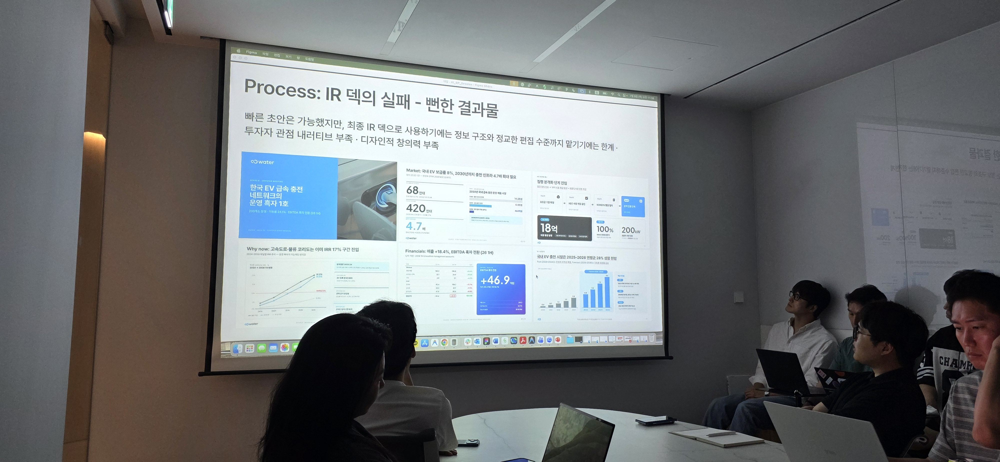
바로 그때 대표님이 던진 한 마디가 세션의 하이라이트였어요.
“나 클로드 디자인 써봤다가 대실패해서, 내가 다시 다 만들었어요.”
황현정 팀장님의 답은 담담했어요. “그런 후기를 많이 듣고 있습니다. 그래도 초안을 만드는 데는 나쁘지 않은 것 같아요.” 그리고 이어진 결론이 이번 발표의 핵심이었습니다.
“그냥 자율주행 디자인은 안 되겠고, 효율을 위해서는 통제된 자율주행을 해야겠다.
AI가 잘하는 반복적인 픽셀 노동은 AI에게, 핵심 UX 결정과 외부로 나가는 자료는 우리가.”
결과적으로 작업 시간의 약 50%가 감소했다는 것이 이번 실험의 정량 지표. 그리고 팀의 오픈 툴킷 두 개 — 워터 design.md 파일과 그래픽 에셋 프롬프트 빌더 — 를 나중에 사내에 공유하기로 했습니다.
03294원, 숫자를 콘텐츠로 — 오명진 매니저님
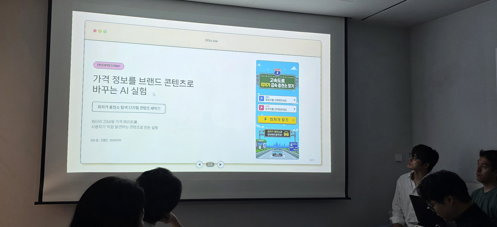
오명진 매니저님은 짧고 굵게, 데모부터 시작했어요. “제니 프로젝트가 완공되면 워터가 고속도로에서 294원이라는 요금 경쟁력을 갖게 되는데요. 이걸 단순한 이미지 배너가 아니라, 인터랙티브하게 만들 수 있다는 걸 보여드리고 싶었어요.”
서울에서 부산까지. 전체 노선에서 최저가 충전소와 추천 충전소가 자동으로 선택되고, 다른 사업자들과 비교되는 화면. 총 15개 충전소 중 워터가 4번째에 위치. “이지차저가 추천으로 뜨는데, 워터를 선택하면 여기서 이만큼을 아낄 수 있습니다” 하는 식의 흐름이었어요.
1차 실패 → 데이터 직접 가공으로 방향 전환
1차 시안은 클로드 코드와 코덱스로 만들었는데, “콘셉트 일관성, 노선에 대한 인지, 인터랙션의 몰입도가 부족했다”고 했어요. 공공 API로 데이터를 붙이려던 두 번째 시도는 인증까지는 받았지만 호출 과정에서 데이터가 계속 누락되었고요.
그래서 AI에 다 맡기지 않고, 사람이 데이터를 직접 가공하는 쪽으로 방향을 바꿨습니다.
- 공공 데이터를 엑셀로 변환, 100km 이상 급속·초급속 충전소만 필터링
- 워터 데이터를 병합해서 통합 데이터셋 생성 → 총 483개 급속/초급속 충전소
- 출발지·도착지 매핑 → 300개의 유효 조합
- 여러 경로가 나오지 않도록 대표 직통 고속도로 하나로 노선 규칙화
피그마·GPT로 UI를 그리고, 클로드 코드·GPT로 데이터를 병합하고, 최종 화면 구현은 코덱스로 갔어요. “Figma MCP를 클로드 코드보다 코덱스가 조금 더 잘 다뤄서요.”
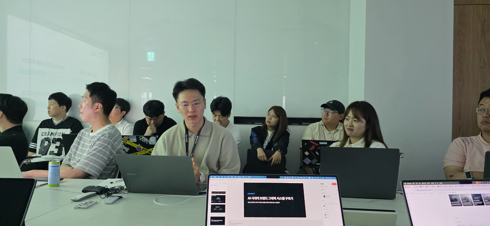
가격표에서 콘텐츠로
오명진 매니저님의 결론은 명료했어요. “294원이 이제 숫자가 아니라 콘텐츠가 되는 거죠. 경로를 바꿔가면서 사람들이 탐색할 수 있으니까 체류 시간이 늘어나고, 광고가 아니라 정보로 선택을 받게 됩니다.”
그가 벤치마킹으로 소개한 담타월드 (하루 300만 명)가 인상적이었어요. 재미있고 중독적인 인터랙티브 콘텐츠 하나로 이만큼 사람들이 몰린다는 것. 마침 담타월드 인기 검색어 1위가 ‘최저가 충전소 찾기’였다고 해요. “저희랑 맞물리는 지점이 있다는 걸 알 수 있었어요.”
“가격 정보가 광고가 될 수도 있지만, 그래도 선택지가 될 수도 있다.”
대표님이 마지막에 물으셨어요. “Claude Code랑 Codex 차이가 뭐길래 디자이너도 그렇게 쓰나?” 답은 완태 선임님이 이어받았습니다. “코덱스가 이야기 맥락 이해와 원하는 작업 수행이 꽤 괜찮았는데, 이번에 fable이 나오면서 압도적으로 성능이 올라왔어요. 비싼 것만 빼면요.”
04각자의 자리에서, 같은 방향으로
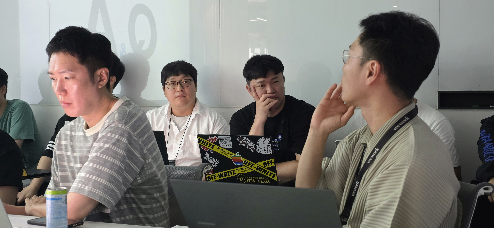
세 번째 세션을 관통한 것은 “각자의 자리”였어요. 임승준 팀장님은 1인 샵으로서 AI를 동료로 삼는 방법을, BXD팀은 AI가 브랜드답게 만들도록 시스템을 짜는 방법을, 오명진 매니저님은 가격표를 콘텐츠로 바꾸는 방법을. 자리가 다르니 접근도 달랐지만, 공통점 하나는 확실했습니다.
세 명 다 “완성”이 아니라 “시도”를 가져왔다는 것. 임 팀장님은 “정답은 없겠고 저도 좌충우돌한다”고 했고, BXD팀은 “대실패도 있었지만 초안 뽑는 데는 나쁘지 않다”고 했고, 오명진 매니저님은 “AI에 다 맡기는 게 아니라 역할을 나눠서 함께 만들어보자”고 했어요.
이번 회차에서 가장 자주 들린 단어는 “대화”였습니다. 임 팀장님의 “팀 단위에선 방향성이 완벽하게 합치될 정도로 대화를 많이 해야 한다”, BXD팀의 “통제된 자율주행 — 우리가 결정할 것과 AI가 할 것을 계속 이야기해야 한다”, 오명진 매니저님의 “데이터를 사람이 먼저 가공하고 나서 AI와 협업한다”. 결국 다른 이야기가 아니었어요.
“AI가 반복적인 픽셀 노동을 덜어준 덕분에, 디자이너는 기획과 최종 퀄리티에 더 몰두할 수 있게 됐어요. 완성의 수준까지 AI가 도달하는 건 결국 어렵더라고요. 그 마지막 한 걸음, 워터다움을 끌어올리는 일은 여전히 디자이너의 자리라는 걸 이번 실험에서 다시 확인했습니다.”
다음 충전은 8월에 시작됩니다. 이번엔 어떤 팀이, 어떤 자리에서 부딪힌 이야기를 들고 올까요.